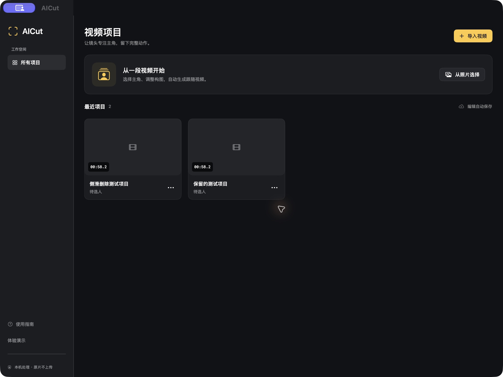
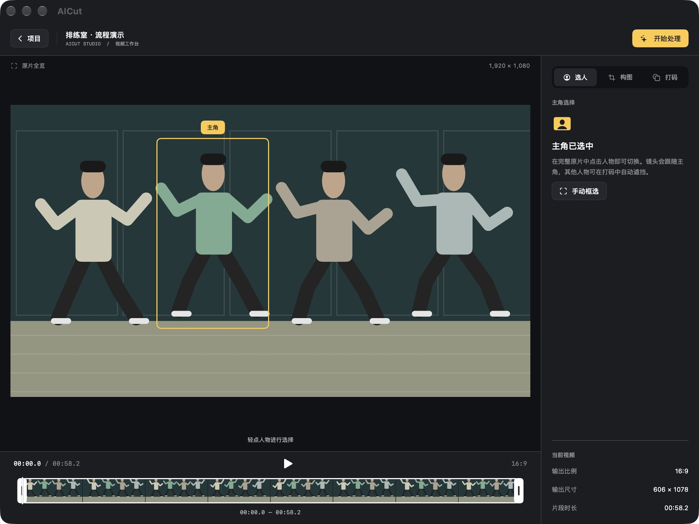
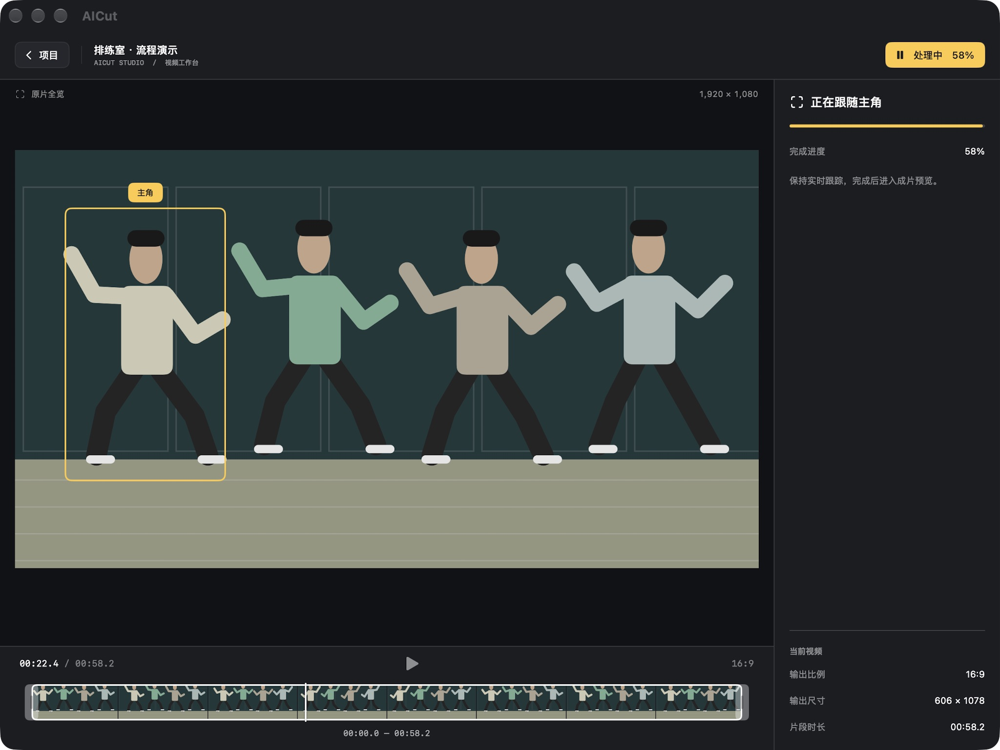
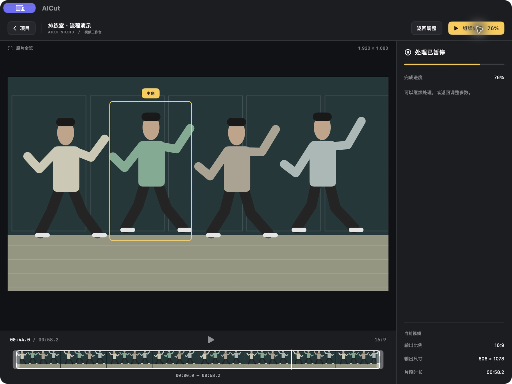

原生 Mac Catalyst 模拟人物界面。炭灰背景、紧凑工具与少量暖金强调色；手机与 Duo 保留原有自适应布局。
固定侧栏、文件导入、可扩展的项目卡片网格。

原片完整全览；时间轴位于视频下方；检查器固定在右侧。
原生分段比例选择；缩放与独立轴向居中；取消可恢复原设置。
自动遮挡其他人物；范围、样式、强度按层级分组。

大画面检查成片，右侧信息与保存操作保持清晰。

演示流程验证：处理中隐藏设置，保留进度；暂停后提供继续处理与返回调整。
